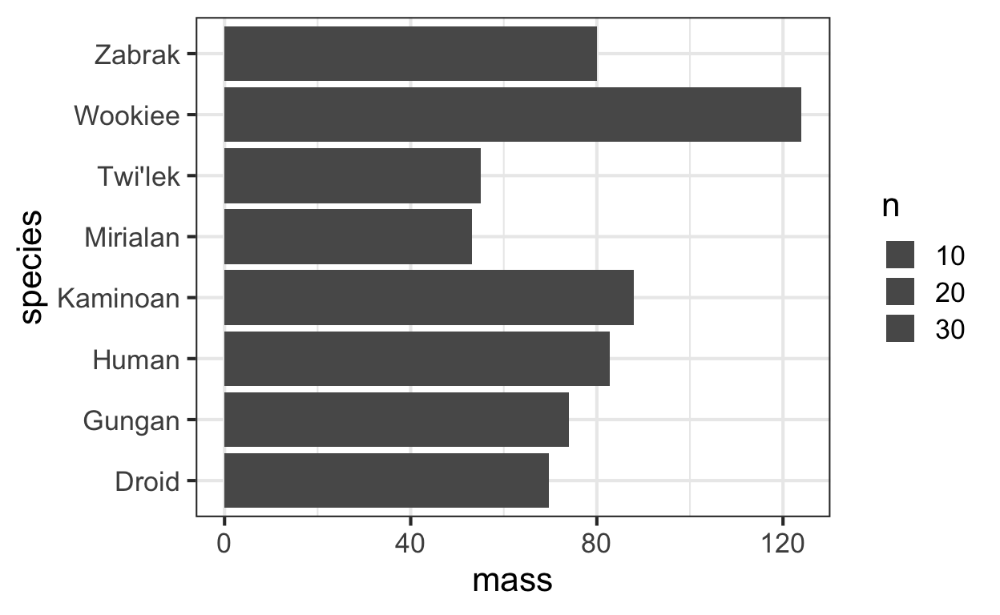

R is a data science language, and carries a unique spirit in providing data scientists tools to increase their productivity, and interactively analyze data. Other than being an open source standard, it also receives robust development from RStudio, which has been contributing several data science projects for the R community, such as tidyverse, ggplot, and tidymodels, and sets a high bar for data science software development. The R community has made admirable improvements to data science by improving functionality, performance, design, and both user and developer experience.
Here are some of the highlights.
- API design in the community focuses on individual primitives that are lightweight and easy to map to a single thought, yet can be composed into more complex analyses.
- High performance computing through C++.
- RStudio maximizes developer flow by having data import, data modeling, data visualization, the code editor, package development tools, and git all in one IDE.
- The makers within the R community have a great experience developing packages, including testing, writing and posting online documentation, creating interactive apps, and teaching. That creates a healthy environment for downstream users to always be aligned to best practices.
Focus on Grammars for Data Analysis
R has a deep focus on grammars for data analysis that feature very rich and thoughtful API design patterns. The grammars allow data scientists to compose arbitrary analyses in an intuitive way with a few, very robust primitives. This allows data scientists full creative freedom to do the analysis they want, without being blocked by functions that do not stack together. The developer experience becomes aligned and elegant, from the way that a data scientist thinks about an analysis, including inspecting data and intermediate outputs, to the way they communicate it for reproducible research, to the way the analysis is programmed. The grammars span across all critical components of data science: in data wrangling (dplyr & tidyr), data modeling (tidymodels), and data visualization (ggplot2).
ggplot2 - a Grammar for Graphics

The most elegant example of a grammar is ggplot2. ggplot composes plots through very simple primitives like geom_bar, geom_point, facet_grid, and coord_flip. Nearly all aspects of the plot are customizeable through ggplot primitives, and they are each scoped in a way that is intuitive to the user. By reading ggplot commands, you immediately have an understanding of what the user is plotting; a geom_bar means the viz will contain a barchart, and coord_flip means the plot will be rotated. Similarly, when you need to write ggplot commands, there is a natural intuition for how to change this plot: for example swapping geom_bar with geom_line will make this a linechart. ggplot2 is an effective way to communicate your visualization structure to a machine and to another person.
The code below shows the elegance of dplyr, ggplot, and the pipe, to walk through a filter and aggregation of the starwars dataset, and then to compose a bar plot of average mass per species.
require(dplyr)
require(ggplot2)
starwars %>%
group_by(species) %>%
summarise(
n = n(),
mass = mean(mass, na.rm = TRUE)
) %>%
ungroup() %>%
filter(n > 1, mass > 50) %>%
ggplot(aes(x = species, y = mass, size = n)) +
geom_bar(stat = 'identity') +
coord_flip() +
theme_bw(base_size = 16)

dplyr & tidyr - a Grammar for Data Manipulation


dplyr and tidyr have emerged as a grammar for data manipulation and data cleaning. They provide fundamental primitives in data manipulation with dplyr::group_by, dplyr::summarise, dplyr::filter, and dplyr::tally, but also provide primitives that handle much more complex cases, like tidyr::pivot_longer and tidyr::pivot_wider.
The grammar also has great ergonomics to minimize the amount of repetition when manipulating data. For example, many datasets name their variables with a specific convention. We may want to manipulate all variables from a specific group. In the example below, dplyr lets us aggregate all columns that have the suffix agg_me. We can even apply multiple aggregations easily.
require(magrittr)
data = data.frame(group = sample(LETTERS, 100, replace = TRUE),
y1_agg_me_not = 1:100,
y2_agg_me = (1:100)^2,
y3_agg_me = rnorm(100))
data %>% head() %>% kable
| group | y1_agg_me_not | y2_agg_me | y3_agg_me |
|---|---|---|---|
| W | 1 | 1 | -0.0204550 |
| E | 2 | 4 | 0.0214538 |
| E | 3 | 9 | -0.0458914 |
| J | 4 | 16 | 1.4529694 |
| Y | 5 | 25 | -0.2254822 |
| L | 6 | 36 | -0.6198267 |
require(dplyr)
require(tidyselect)
data %>%
filter(group != 'D') %>%
group_by(group) %>%
summarise(across(ends_with("agg_me"), list("sum" = sum, "mean" = mean))) %>%
ungroup() %>%
head() %>%
kable
| group | y2_agg_me_sum | y2_agg_me_mean | y3_agg_me_sum | y3_agg_me_mean |
|---|---|---|---|---|
| A | 16748 | 4187.000 | 0.9162618 | 0.2290654 |
| B | 14141 | 4713.667 | -1.1713720 | -0.3904573 |
| C | 23225 | 5806.250 | 1.1870365 | 0.2967591 |
| E | 8942 | 2235.500 | 3.7416921 | 0.9354230 |
| F | 10935 | 2733.750 | 0.8967162 | 0.2241790 |
| H | 23439 | 2929.875 | 3.8536697 | 0.4817087 |
We can also pivot a “long” dataset into a “wide” one, especially for dynamic aggregation. Below, we have a common, “long” dataset listing impressions and clicks on various items for a user. Say we want to generate click through rates on each item, and then want to use those rates as features for a model.
data = data.frame(user = c(rep("J", 3), rep("C", 3), rep("N", 3)),
item = rep(c("Item1", "Item2", "Item3"), 3),
impressions = 1:9,
clicks = 1:9)
data %>% head %>% kable
| user | item | impressions | clicks |
|---|---|---|---|
| J | Item1 | 1 | 1 |
| J | Item2 | 2 | 2 |
| J | Item3 | 3 | 3 |
| C | Item1 | 4 | 4 |
| C | Item2 | 5 | 5 |
| C | Item3 | 6 | 6 |
Using the long dataset it’s easy to create the per-user per-item click through rate.
data = data %>%
mutate(click_through_rate = clicks/impressions)
data %>% kable
| user | item | impressions | clicks | click_through_rate |
|---|---|---|---|---|
| J | Item1 | 1 | 1 | 1 |
| J | Item2 | 2 | 2 | 1 |
| J | Item3 | 3 | 3 | 1 |
| C | Item1 | 4 | 4 | 1 |
| C | Item2 | 5 | 5 | 1 |
| C | Item3 | 6 | 6 | 1 |
| N | Item1 | 7 | 7 | 1 |
| N | Item2 | 8 | 8 | 1 |
| N | Item3 | 9 | 9 | 1 |
Then, we pivot the user-item level data into a user dataset, so that we have 3 user variables for the 3 click through rates.
require(tidyr)
require(tidyselect)
data %>%
pivot_wider(names_from = item, values_from = c(impressions, clicks, click_through_rate)) %>%
select(user, starts_with("click_through_rate")) %>%
kable
| user | click_through_rate_Item1 | click_through_rate_Item2 | click_through_rate_Item3 |
|---|---|---|---|
| J | 1 | 1 | 1 |
| C | 1 | 1 | 1 |
| N | 1 | 1 | 1 |
dplyr’s interface is consistent across many inputs, not just R dataframes. The input can be a spark dataframe, or even a parquet file, making it easy to transition from prototype code to production code. All of the above dplyr code can be executed agnostically, adding to the elegance and thoughtful thinking that goes into R grammars.
Recipes - a Grammar for Data Preprocessing

recipes is the most recent grammar added to R, and is targeted towards improving data preprocessing, a universal challenge for all data scientists. The grammar lets you define several data preprocessing steps that can be composed into a recipe that transforms a data.frame. The recipe can then be applied to other datasets, giving complete reproducibility to data. For example, the recipe below trains an imputation step, which is then baked from a data.frame called data.
require(recipes)
n = 100
data = data.frame(
y = rnorm(n),
categorical = sample(LETTERS, n, replace = TRUE),
numerical = rnorm(n),
constant = 1
)
rec = recipe(y ~ categorical + numerical + constant, data = data) %>%
step_meanimpute(all_numeric()) %>%
step_modeimpute(all_nominal()) %>%
prep(data) %>%
bake(data)
This recipe can be reapplied to any dataframe, including an out of sample dataset, and will reapply the same imputation logic from data. For machine learning, you can preprocess a test set in the exact same way you preprocess the training set.
High Performance Computing

Rcpp provides a boost to data science productivity by making functions faster. It offers rich integration between R and C++. Very similar to cython and pybind11 in Python, Rcpp can compile low level C and C++ code that can be orders of magnitude faster than interactive languages like R. For example, for loops can be made significantly faster by compiling them in C++. OpenMP and Intel TBB can make C++ algorithms multithreaded, instead of having to rely on Unix like forks. Memory allocation can be controlled better, reducing the memory footprint of an algorithm while simultaneously making it faster.
Just like the beautiful ergonomics in dplyr, Rcpp takes care of many barriers of entry into high performance computing. The package will compile C++ source code, load the C symbol table into R, and convert between R types and C++ types for you. Using Rcpp::sourceCpp or devtools::load_all, you can have an editor open, write C++ code, and immediately bring optimized functions into R without restarting the session or managing a Makefile. This combines the performance of C++ with the interactivity of R.
Because of Rcpp’s ease of use, there are over 1000 R packages using Rcpp. This aspect of computing is one of the biggest reasons why R has changed so much in recent years.
Multilingual Data Science

RStudio has been pivoting itself from not only developing R software, but also developing data science tools in general. For example, see its page on the Essentials of Data Science and Advanced Data Science.
Reticulate is the most noteworthy package. It allows an R user to invoke Python functions while still inside an R session. The package takes care of converting Python and R data types for you: it is possible to invoke a python function that uses an R dataframe as input, and under the hood the dataframe will be converted to a pandas type. Data scientists that are multilingual in Python and R do not need to have two notebooks running in parallel. At the same time, broader data science collaboration is enabled.
Reticulate’s integration is broad. It is embedded in RStudio and RMarkdown, where you can develop Python scripts just as easily as R scripts. You can even create RStudio Notebooks that weave native Python code cells and R code cells together, where RStudio will transfer data types between languages for you.
Through Python and C++ bindings, R is able to elegantly integrate with Tensorflow and Keras, which were primarily developed in Python and C++. This allows RStudio to act as a primary hub for multiple data science languages.
Package Development

Developing a package in R that can be distributed to others is an easy and uniquely interactive experience. The package devtools provides all the tools a developer will need, and you will not need to exit the R session to go to bash or any other environment. This minimizes distractions and creates a productive developer workflow. Having a good package development experience is crucial for growing a productive community of open source developers.
To create a package, a user collects a series of .R files into an /R/ directory as if they were going to be sourced. To import the package into the R session, just run devtools::load_all(). During the development process, modify the source files directly in RStudio, and reload the package again using devtools::load_all(). You will not need to restart the R session. To create manual pages according to docstrings, simply run devtools::document(). To test the package, simply run devtools::test(). To release a package to the open source simply run devtools::release(). All of this is done without toggling environments; the developer can stay inside RStudio.
Running tests interactively is a major productivity boost to debugging software. Tests are written in a self contained script, so you can run lines one by one to prepare data and run your functions. R is meant to be interactive, so when a test fails you can use the current R session to rerun a test and use debugger tools to figure out what is wrong. You will not need separate test infrastructure, so debugging a unit test truly feels like combing your code line by line. Being able to stay inside one single R session without restarts or other third party infrastructure streamlines rapid iteration of editing source code, running unit tests, running a debugger, and releasing code.
The R community has thousands of packages and open source developers. To maintain a healthy ecosystem where packages are compatible with each other, developers can make use of devtools::revdep(). This function will lookup all packages that depend on package X, and run their unit tests against the development version of package X, allowing developers to make safe releases into the community.
RStudio


RStudio is an IDE, notebook, debugger, and profiler all in one. You do not need separate UIs or terminals to iterate and produce high quality code. This creates great developer flow.
For better productivity, you can run R on remote servers that are always on and always available. Combined with AWS’s customizeable hardware, this lets you do data science from anywhere with any amount of resources. RStudio Server lets you connect to RStudio on a remote machine using your browser. If you don’t want to maintain the hardware, you can also use RStudio Cloud. This is one of the most advanced browser based data science IDEs that exists.
Package Documentation

Documenting software is a crucial part of developing successful open source software. In order to produce high quality software, the experience of writing documentation needs to be frictionless. R makes developing packages with high quality documentation easy. To document a function, simply add a docstring next to the function’s source code. To create documentation on larger topics, you can use RMarkdown to create a notebook vignette that contains any combination of text, HTML, LaTeX and R/Python/C++ code cells. These notebooks can become part of the package documentation. As seen many times before, R takes common workflows - for example creating a Notebook to demo code - and turns them into paths for writing documentation.
Using pkgdown and pkgdown::build_site() you can build beautiful html websites containing documentation and vignettes from your package. The function builds the entire website, html files, and other assets that can be simply uploaded to github and turned into a website using github pages.
Using distill you can create an entire data science blog, such as this one!